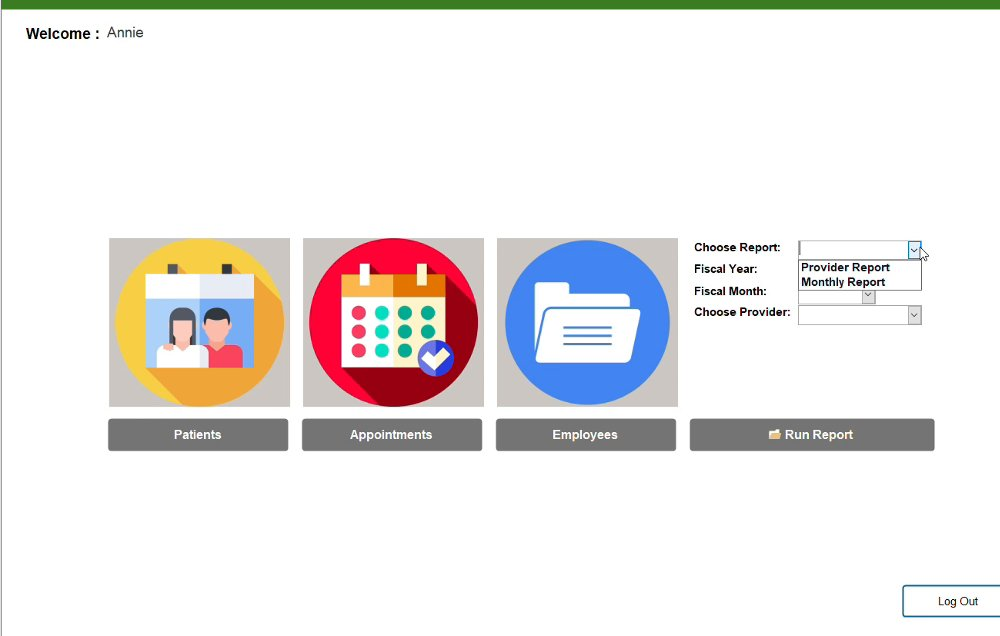
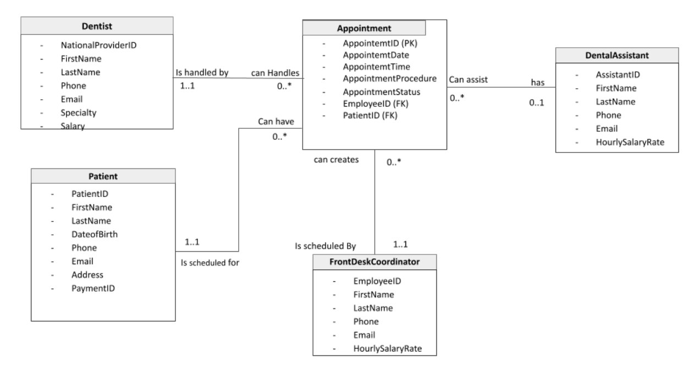
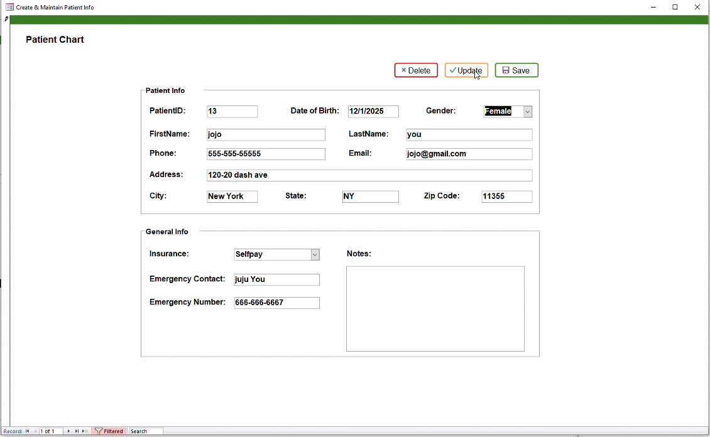
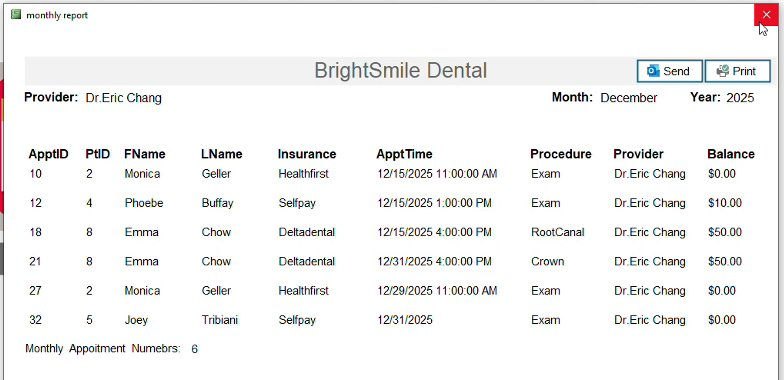

BrightSmile Dental Database
A single Microsoft Access application to replace paper charts, spreadsheets, and a wall calendar at a small dental clinic.

The problem
BrightSmile Dental is the case for this project: a small general dentistry clinic in Queens that has been open for four years. The clinic tracked patients, appointments, billing, insurance, and supply orders with paper charts, Google Sheets, and a wall calendar. As it grew, that setup led to scheduling conflicts, missing clinical notes, slow insurance follow-ups, and little view of inventory and revenue.
The goal was one database application that the dentist, office manager, front desk, and dental assistant could all use.
Design
ER model
The first model had many entities and was hard to follow. After going back to the business requirements, it was simplified to five main entities: Dentist, Patient, Appointment, Dental Assistant, and Front Desk Coordinator. A dentist handles many appointments, a patient can have many appointments, and each appointment is created by one front desk coordinator.

Normalization
The model was taken through First, Second, and Third Normal Form. Appointment and Appointment_Procedure were split so that each appointment can hold several procedures, and lookup data such as procedures and payment methods moved into their own tables. In the final build, dentists, assistants, and front desk staff were combined into one Employee table with a job title field, which removed three nearly identical tables.
Tables in the final database
| Table | What it stores |
|---|---|
| PatientTable | Contact details, date of birth, insurance, emergency contact, and notes |
| Appointment | Date, time, status, procedure, provider, clinic notes, and payment balance |
| EmployeeTable | Staff details, job title, work days, hourly rate, and login |
| ProcedureCatalog | Procedures and their default fees |
| AppointmentProcedure | Which procedures were done in each appointment and the fee charged |
| InventoryItem | Supplies on hand and their reorder points |
What the application does
- LoginStaff sign in with a username and password stored in the Employee table.
- DashboardOne screen that opens patients, appointments, and employees, and runs reports.
- Patient, appointment, and employee filesEach list has search and Create buttons, and each record opens in a chart form with Delete, Update, and Save.
- ReportsA monthly appointment report and a report by provider, chosen by fiscal year, month, and provider.
- QueriesSupplies at or below their reorder point, and revenue and visit count by procedure.
- Test dataSample patients, staff, appointments, and procedures to check every form and report.


Demo
A four-minute run-through of the forms and reports.
If the video does not load, watch it on YouTube.
My role
Team project. I led the project and built the database:
- Designed the ER model and normalized it to Third Normal Form, together with Caroline Guirand.
- Built the tables and relationships in Microsoft Access.
- Built the login, dashboard, and patient, appointment, and employee forms.
- Wrote the queries and built the monthly and provider reports.
- Led the team's final presentation, recorded the demo, and wrote the final report.